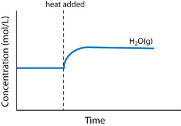
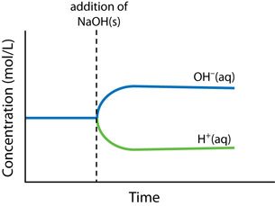
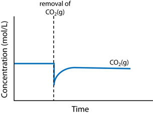
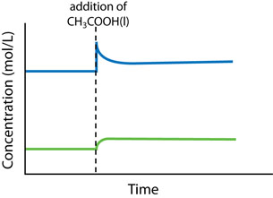

Module 7—Principles of Chemical Equilibrium
 Read
Read
For equilibrium systems containing gases, a change in the volume of the system can also be a stress that will bring about a shift in equilibrium. Read page 694 of the textbook to learn about the effect that a change in volume and the addition of a catalyst can have on the equilibrium of a system. As you read this section you may wish to recall the pressure–volume relationship you learned about in previous science courses—a halving of the volume of a fixed quantity of gas results in a doubling of the gas’ pressure.
There are three main changes that can affect the equilibrium in a chemical system: concentration change, temperature change, and volume (or pressure) change.
- Concentration change: An increase in concentration causes a shift to consume some of the added reactant or product. A decrease in concentration causes a shift to produce some of the removed reactant or product.
- Temperature change: An increase in temperature of a system causes a shift to absorb some of the added heat energy. A decrease in temperature causes a shift to replace some of the energy that has been removed.
- Volume (or pressure) change: An increase in volume (decrease in pressure) causes a shift toward the side with the larger total chemical amount of gaseous entities. A decrease in volume (increase in pressure) causes a shift toward the side with the smaller total chemical amount of gaseous entities.
 Self-Check
Self-Check
SC 1. Complete “Practice” questions 2 and 3 on page 695 of the textbook.
Self-Check Answers
Contact your teacher if your answers vary significantly from the answers provided here.
SC 1.
Practice 2.
|
Direction of Shift in Equilibrium |
Graph |
A |
Right |
 |
B |
Left |
 |
C |
Right |
 |
D |
Right |
 |
Practice 3.
- Increasing the pressure increases the frequency of collisions between the gaseous particles favouring the forward reaction. The system shifts to the right.
- The forward reaction is exothermic; therefore, increasing the temperature will favour the reverse reaction. The system shifts to the left.
- A high temperature is necessary to speed up the reactions so the process occurs in a reasonable amount of time.
- Both actions, increasing the concentration of reactants and removing the product, are stresses that will favour the forward reaction in the system.